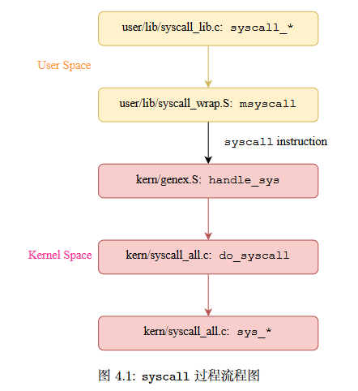

BUAAOS-Lab6实验报告
思考题
Thinking 6.1
示例代码中，父进程操作管道的写端，子进程操作管道的读端。如果现在想让父进程作为“读者”，代码应当如何修改？
以下是修改后的代码：
1 |
|
在本地编译运行得到输出结果：
1 | father-process read:Hello world |
Thinking 6.2
上面这种不同步修改 pp_ref 而导致的进程竞争问题在 user/lib/fd.c 中的 dup 函数中也存在。请结合代码模仿上述情景，分析一下我们的 dup 函数中为什么会出现预想之外的情况？
修改前的逻辑是：先将文件描述符进行复制(map到新地址)，再将文件内容进行复制。这样就会出现pageref(fd)比pageref(pipe)先进行更新的情况，也就是调用dup后pageref(fd)会比pageref(pipe)先加一。
那么可能会存在这样的情况：子进程调用dup复制写端的文件描述符前，有pageref(p[1]) == pageref(pipe) - 1，而在两次map中发生进程切换，转换到父进程运行，而父进程调用了pipe_is_closed(p[1])，而此时的确满足pageref(p[1]) == pageref(pipe)，就会得出管道已经关闭的错误情况了。
Thinling 6.3
阅读上述材料并思考：为什么系统调用一定是原子操作呢？如果你觉得不是
所有的系统调用都是原子操作，请给出反例。希望能结合相关代码进行分析说明。
首先，我认为系统调用一定是原子操作。
首先来看用户进程进行系统调用的调用链：

可以发现，系统调用是由/user/lib/syscall_wrap.S/msyscall函数中的syscall汇编指令触发的：
1 | LEAF(msyscall) |
Lab3指导书有如下描述：
此外，R3000 中 SR 寄存器的低六位是一个二重栈的结构。KUo 和 IEo 是一组，每当异常发生的时候，CPU 自动会将 KUp 和 IEp 的数值拷贝到这里；KUp 和 IEp 是一组，每当异常发生的时候，CPU 会把 KUc 和 IEc 的数值拷贝到这里。随后将 KUc 和 IEc 置为 0。
一组数值表示一种 CPU 的运行状态，其中 KU 位表示是否位于用户模式下，为 1 表示位于用户模式下；IE 位表示中断是否开启，为 1 表示开启，否则不开启，而 KUc 和 IEc 则为 CPU当前实际的运行状态。
也就是说，我们通过syscall指令触发异常，陷入内核态处理系统调用时，已经通过对IEc置0来关闭所有中断了，也就是说，系统调用是通过“关中断”实现的原子操作。
而MIPSR3000文档的这段描述也可以佐证我们的这一论断。

Thinking 6.4
仔细阅读上面这段话，并思考下列问题
- 按照上述说法控制 pipe_close 中 fd 和 pipe unmap 的顺序，是否可以解决上述场景的进程竞争问题？给出你的分析过程。
- 我们只分析了 close 时的情形，在 fd.c 中有一个 dup 函数，用于复制文件描述符。试想，如果要复制的文件描述符指向一个管道，那么是否会出现与 close 类似的问题？请模仿上述材料写写你的理解。
第一问：
可以解决，对于这样的写法：
1 | static int pipe_close(struct Fd *fd) { |
不难分析得出必然存在不等式page_ref(fd) <= page_ref(pipe)，而当我们像上面这样设置unmap操作的顺序的话，在两次unmap中间对pipe_close进行中断的话，必然有page_ref(fd) < page_ref(pipe)成立，因此不会在这个过程中对管道的开关过程发生误判。
第二问：
会出现问题。正如我在Thinking 6.2中所写的那样，如果先对fd进行map后对page进行map的话，会诱发page_ref(fd) == page_ref(pipe)这样的情况，造成误判。
Thinking 6.5
思考以下三个问题。
- 认真回看 Lab5 文件系统相关代码，弄清打开文件的过程。
- 回顾 Lab1 与 Lab3，思考如何读取并加载 ELF 文件。
- 在 Lab1 中我们介绍了 data text bss 段及它们的含义，data 段存放初始化过的全局变量，bss 段存放未初始化的全局变量。关于 memsize 和 filesize ，我们在 Note1.3.4中也解释了它们的含义与特点。关于 Note 1.3.4，注意其中关于“bss 段并不在文件中占数据”表述的含义。回顾 Lab3 并思考：elf_load_seg() 和 load_icode_mapper()函数是如何确保加载 ELF 文件时，bss 段数据被正确加载进虚拟内存空间。bss 段在 ELF 中并不占空间，但 ELF 加载进内存后，bss 段的数据占据了空间，并且初始值都是 0。请回顾elf_load_seg() 和 load_icode_mapper() 的实现，思考这一点是如何实现的？
第一问：
user/lib/files.c文件中的open函数调用同文件夹下的fsipc open函数,fsipc open通过调用fsipc函数向服务进程进行进程间通信，并接收返回的消息。而相应的文件系统服务进程的serve_open函数调用file_open对文件进行打开操作，最终通过进程间通信实现与用户进程对文件描述符的共享。
第二问：
由kern/env.c文件中的load_icode函数实现。
第三问：
- elf_load_seg函数：在该函数处理程序的循环中，当处理到.bss段时，该函数会调用
map_page把相应的虚拟地址映射到物理页上，但不会从文件中加载数据。而在map_page的内部会调用load_icode_mapper函数将页面进行映射并根据参数将内容置为0； - load_icode_mapper函数：当处理到.bss段时，不从源数据中复制任何内容。最终调用
page_insert函数将其置入页表并指定权限。该函数会根据传入的参数在页表项中建立映射关系，并初始化页面为0.
Thinking 6.6
通过阅读代码空白段的注释我们知道，将标准输入或输出定向到文件，需要我们将其 dup 到 0 或 1 号文件描述符（fd）。那么问题来了：在哪步，0 和 1 被“安排”为标准输入和标准输出？请分析代码执行流程，给出答案。
在文件user/sh.b中，我们可以找到如下代码段：
1 | // stdin should be 0, because no file descriptors are open yet |
也就是说，在shell进程初始化的时候，由我们规定文件描述符0是标准输入而文件描述符1是标准输出。
Thinking 6.7
在 shell 中执行的命令分为内置命令和外部命令。在执行内置命令时 shell 不需要 fork 一个子 shell，如 Linux 系统中的 cd 命令。在执行外部命令时 shell 需要 fork一个子 shell，然后子 shell 去执行这条命令。
据此判断，在 MOS 中我们用到的 shell 命令是内置命令还是外部命令？请思考为什么Linux 的 cd 命令是内部命令而不是外部命令？
在文件shell.c的main函数中有如下核心代码段：
1 | for (;;) { |
可知在MOS中我们用到的shell命令除了echocmds和注释两种情况外，都需要fork一个子shell来处理输入的命令。
Linux的cd指令使用频率较高，若设置为外部指令必然会在cd的时候多次调用fork生成子进程，这显然是低效的。将其设置为内部指令可以切实提高我们操作系统的效率。
Thinking 6.8
在你的 shell 中输入命令 ls.b | cat.b > motd。
- 请问你可以在你的 shell 中观察到几次 spawn ？分别对应哪个进程？
- 请问你可以在你的 shell 中观察到几次进程销毁？分别对应哪个进程？
第一问：
直接运行该命令得到如下输出：
1 | [00002803] pipecreate |
通过debugf打log得到输出：
1 | [00002803] is forked in shell! [1] |
也就是说整个总共spawn了两次，分别是由最初被fork出的2803进程spawn出了3805进程，以及3004(被2803进程在parsecmd时fork得到)进程spawn出了4006进程。
第二问：
观察到了四次进程销毁，下面分别介绍：
- 2803进程：由主shell进程fork出来的子shell进程，用于解析并执行当前命令；
- 3004进程：由2803进程fork出来的子进程，用于解析并执行管道右端的命令；
- 3805进程：由2803进程spawn出来的子进程，用于执行管道左边的命令；
- 4006进程：由3004进程spawn出来的子进程，用于执行管道右边的命令；
实验难点
本次实验是在整个MOS操作系统的实现过程中，在层次角度考虑是最顶层的一次实验，因此本次实验的综合性相对较强。
在我看来，本次实验的主要难点集中在对整个shell程序运行流程的理解，具体地可以分为以下几点：
- 理清shell相关函数的作用以及相互之间的调用关系；
- 对
spawn函数的理解与填写，这要结合包括Lab1，Lab3，Lab4，Lab5等实验的知识点诸如fork，ELF文件的加载等进行理解； - 对于整个shell的运行流程的理解。
体会与感想
本次实验任务相对来说较少，较为简单(除去spawn函数的理解与填写有些耗费精力)，但是在完成实验的基础上，仍需要下功夫去研究新增的代码的功能和作用。
好感慨啊，一学期的os实验就这么告一段落了，实验任务量很大，但是今年os实验在课程组的各位佬的改造下，至少对于我这种菜鸡来说已经是十分友好了。